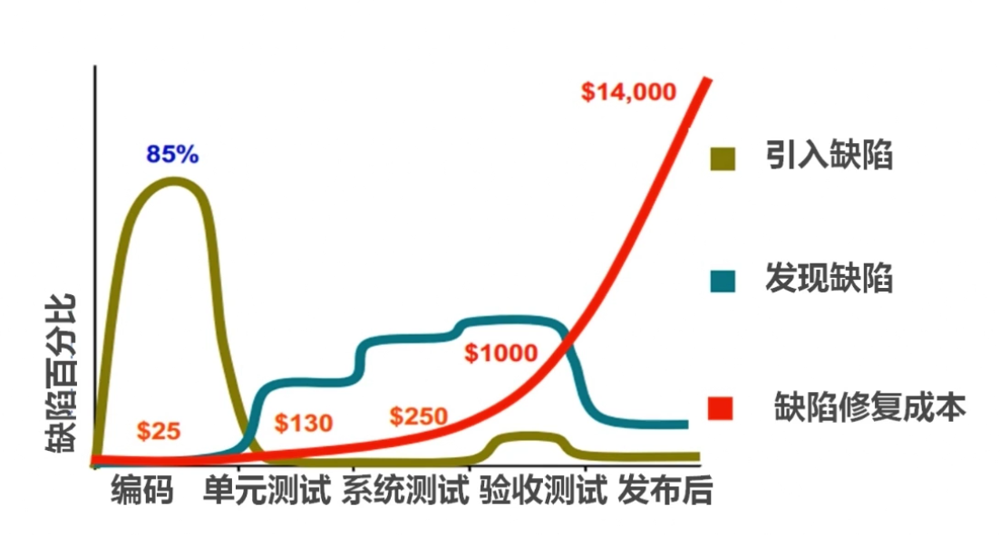
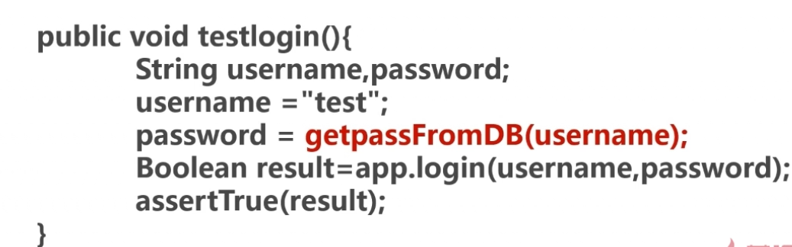

分享人：杨江
目录
一.背景介绍
二.按测试阶段分类
三.按测试手段分类
四.按测试类型分类
五.其他测试类型
六.参考文献
七.更多讨论
1.软件测试
使用人工或自动的手段来运行或测量软件系统的过程，以检验软件系统是否满足规定的要求，并找出与预期结果之间的差异。
2.软件测试五大要素
质量：软件质量
人员：测试人员，是决定因素，决定技术、流程、资源的配置使用
资源：硬件设备、网络环境等
流程：测试计划、测试用例、测试执行、报告等
技术：测试手段，软件测试技术、方法，工具
3.软件测试的两个目标
测试覆盖率：有效保证软件质量
测试效率：更好地完成软件测试
4.软件测试的原则
测试显示缺陷的存在，但不能证明系统不存在缺陷
穷尽测试是不可能的，应设定及时终止的条件
测试应该尽早进行
缺陷具备群集特性
测试的杀虫剂悖论
测试的二八原则
测试活动依赖于测试背景
单元测试、集成测试、系统测试、验收测试
对软件中的最小可测试单元进行检查和验证，一般指针对代码的测试。
尽可能保证各个测试用例是互相独立的
一般由代码的开发人员来实施，用以检验所开发的代码功能符合自己的设计要求
在单元测试的基础上，测试在将所有的软件单元按照设计规格说明的要求组装成模块、子系统或系统的过程中各部分工作是否达到或实现相应技术指标及要求的活动
将经过集成测试的软件，作为计算机系统的一部分，与系统中其他部分结合起来，在实际运行环境下对计算机系统进行的一系列严格有效的测试，以发现软件潜在的问题，保证系统的正常运行
系统测试关注点
关注系统本身的使用
关注系统与其他相关系统的连通
关注系统在不同使用压力下的表现
关注系统在真实使用环境下的表现
也称交付测试，针对用户需求、业务流程的正式的测试，确定系统是否满足验收标准，由用户、客户或其他授权机构决定是否接受系统。
黑盒测试、白盒测试、手工测试、自动化测试
黑盒测试
在测试中将被测试系统或软件看成无法打开的盒子，在完全不考虑程序内部结构和特性的情况下，通过相关暴露出的接口，来对程序进行测试。只检查程序的功能是否按照需求实现。是否能接受输入的数据，并产生正确的输出信息。针对软件的界面及功能进行测试。
更多从用户的视角出发进行测试。
优点：
容易实施，不需要关注内部的实现
更贴近用户的使用角度
缺点：
测试覆盖率较低，一般只能覆盖到代码量的不到40%
针对黑盒的自动化测试，复用率较低，维护成本较高
黑盒测试的关注点：
是否有不正确或遗漏的功能
在接口上，输入是否能正确的接受？能否输出正确的结果？
性能是否能够满足要求
主要设计方法：
边界值分析法、错误推测法、状态迁移图法等
白盒测试
系统对测试人员透明，又称结构化、透明盒测试，针对程序的逻辑结构设计测试用例。用逻辑的覆盖率衡量测试的完整性。
优点：
迫使测试人员去仔细思考软件的实现，理解原理。
可以检测代码中的每条分支和路径
揭示隐藏在代码中的错误
对代码的测试比较彻底
缺点：
工作量大
不能直接验证需求的正确性
主要测试方法：
代码检测法、逻辑覆盖法等
手工测试
由专门的测试人员从用户视角来验证软件是否满足设计要求的行为，更适合针对深度的测试和强调主观判断的测试。
常见类型：探索式测试
优点：
易发现缺陷
容易实施
创造性、灵活性
缺点：
覆盖量化难
重复测试效率低
不一致性、可靠性低
人力资源依赖
自动化测试
使用单独的测试工具软件控制测试的自动化执行以及对预期和结果进行自动检查。
常见类型：单元测试、接口测试、性能测试
优点：
高效率、速度快
高复用性
覆盖率容易度量
准确、可靠
不知疲劳
缺点：
机械、发现缺陷率低
一次性投入较大
功能测试、性能测试、兼容性测试
功能测试
软件测试中最主要的一种类型，根据产品特性、操作描述和用户方案，测试一个产品的特性和可操作行为以确定它们满足设计需求。
针对的问题：功能错误或遗漏、界面问题、性能错误、数据及访问错误、初始化及终止错误。
常用功能测试工具：
商用：qtp、silktest、rational robot
开源：selenium、watir、sikuli
性能测试
验证软件系统的性能，可以满足需求规格的要求。
分类：
负载测试：测试过程中逐步增加负载，并记录下被测试系统响应的性能表现，最终确定出系统在正常的指标范围下的最大负载。
压力测试：在极限情况下测试系统，导致系统失效的负载压力。
稳定性测试：稍大于正常业务量的负载，对系统进行持续长时间的测试，确定系统在较长时间下的系统稳定性。
性能指标：
并发用户数VU，请求数，每秒事务数TPS，系统响应时间，设备性能
性能测试工具：
loadrunner，jmeter，Apache bench
安全测试：对软件产品进行测试以确保其符合产品安全需求和质量标准。
渗透测试：通过模拟对软件系统的恶意攻击行为来评估系统安全性的一种测试。
owasp兼容性测试
软件本身的兼容性、不同平台下的兼容性、软件对运行设备的兼容性、软件互操作性
回归测试、monkey测试、冒烟测试、AB测试
回归测试
软件功能修改后，对软件进行重新测试以确定修改没有引入新的错误或导致其他部分产生错误。
回归测试的中心在关键模块和重点功能组件。
软件研发周期中会进行多次回归测试，且尽量实现自动化。
monkey测试
也称搞怪测试，用一些随机、稀奇古怪的方式来操作软件，以测试系统的健壮性和稳定性。
冒烟测试
来自于硬件板卡验证术语。软件上则用于确认代码中的更改会按预期运行，且不会破坏整个版本的稳定性。
A/B测试
通过为页面提供两个版本给用户使用并记录相关的用户行为数据，来确定更优化设计的一种测试方案。
实施要点：
多个方案并行
每次测试仅改动一个变量
按照某种规则进行优胜劣汰
A/B测试工具：
Google analytics content experiments
Visual website optimizer
参考1：Jmeter
参考2：selenium
感谢大家观看
BY : 杨江